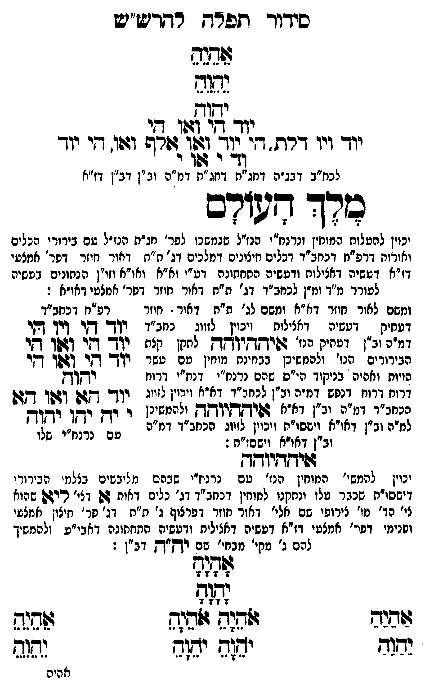

Neue Klartextfassung
אֵהֵיֵהֵ יֵהֵוֵהֵ יהוה יוד הי ואו הי יוד ויו דלת הי יוד ואו אלף ואו הי יוד וד י או י [לכח"ב דבג"ה דחג"ת דחג"ת דמ"ה וב"ן דב"ן דז"א] מלך העולם [יכוין להעלות המוחין ונרנח"י הנז"ל שנמשכו לפר' חג"ת הנז"ל עם בירורי הכלים והאורות דרפ"ח דכחב"ד דכלים חיצונים דמלכים דג' ת"ת דאור חוזר דפר' אמצעי דז"א דעשיה דכללות ורביעיה התחתונה דע"י וא"א ואו"א וזו"ן הנתונים בעשיה לעורר מ"ד ומ"ן לכחב"ד דג' ת"ת דאור חוזר דפר' אמצעי דאו"א:] [ומשם לאור חוזר דא"א ומשם לג' ת"ת דאור חוזר דעתיק דעשיה דכללות ויכוין לזווג כחב"ד דמ"ה וב"ן דעתיק הנז' איההיוהה לתקן כלם הבירורים הנז' ולהמשיכן בבחינת מוחין עם עשר הויות וחלפי' בניקוד כ"ס שהם נרנח"י ורנח"י דרוח דרוח דנפש דמ"ה וב"ן לכחב"ד דא"א ויכוין לזווג כחב"ד דמ"ה וב"ן דא"א איההיוהה ולהמשיכן למ"ה וב"ן דאו"א וישסו"ת ויכוין לזווג הכחב"ד דמ"ה וב"ן דאו"א וישסו"ת:] === טבלה === [טור ימין] [טור אמצעי] [טור שמאל] יוד הי ויו הי יוד הי ואו הי יוד הי ואו הי יהוה יוד הא ואו הא י יה יהו יהוה [עם כתר"ו שלו] === סוף טבלה === איההיוהה [יכוין להמשי' המוחין הנז' עם נרנח"י שבהם מלובשים בצלמי הבירורי' דישסו"ת שכבר עלו ונתקנו למוחין דכחב"ד דג' כלים דאות א דג' לאי שהוא לי' הו' מו' צירופי שם אלי דאור חוזר דפרצוף ג' ת"ת[?] דג' פר' חיצון אמצעי ופנימי דפר' אמצעי דז"א דעשיה דכללות ורביעיה התחתונה דאבי"ע ולהמשיך להם ג' מקי' מבחי' שם יה"ה דב"ן:] === טבלה === [טור ימין] אַהַיַהַ יַהַוַהַ [טור אמצעי] אָהָיָהָ יָהָוָהָ אֹהֵיָהֵ אֹהֵיָהֵ יֹהֵוָהֵ יֹהֵוָהֵ [טור שמאל] אֵהֵיֵהֵ יֵהֵוֵהֵ === סוף טבלה ===
Original gegen neue OCR · Niqqud für Vergleich ausgeblendet
Original
אהיה יהוה יהוהK077-001 יוד הי ואו היK077-002 יוד ויו דלת היK077-003 יוד ואו אלף ואו הי יוד וד י או י [לכח"בK077-004 דבג"ה דחג"ת דחג"תK077-005 דמ"ה וב"ן דב"ן דז"א] מלך העולם [יכוין להעלותK077-006 המוחין ונרנח"יK077-007 הנז"ל שנמשכו לפר' חג"ת הנז"ל עםK077-008 בירורי הכלים והאורותK077-009 דרפ"ח דכחב"ד דכלים חיצונים דמלכים דג' ת"ת דאור חוזר דפר' אמצעי דז"א דעשיה דכללות ורביעיה התחתונה דע"יK077-010 וא"א ואו"א וזו"ן הנתונים בעשיהK077-011 לעורר מ"ד ומ"ן לכחב"ד דג' ת"תK077-012 דאור חוזר דפר' אמצעי דא"א:] [ומשםK077-013 לאור חוזר דא"א ומשם לג' ת"תK077-014 דאור ∅K077-015 חוזר דעתיקK077-016 דעשיה דכללותK077-017 ויכוין לזווג כחב"ד ∅K077-018 דמ"ה וב"ן דעתיקK077-019 הנז' איההיוהה לתקן כלםK077-020 הבירורים הנז' ולהמשיכן בבחינתK077-021 מוחין עםK077-022 עשר הויות וחלפי'K077-023 בניקוד כ"סK077-024 שהם נרנח"י ורנח"יK077-025 דרוח ∅K077-026 דרוח דנפש ∅K077-027 דמ"ה ∅K077-028 וב"ן לכחב"ד דא"אK077-029 ויכוין לזווג כחב"דK077-030 דמ"ה ∅K077-031 וב"ן דא"א איההיוהה ולהמשיכן למ"ה וב"ן דאו"אK077-032 וישסו"ת ויכוין לזווג הכחב"ד דמ"ה וב"ן דאו"א וישסו"ת:] === טבלה === [טור ימין] [טור אמצעי] [טור שמאל] יוד הי ויו הי יוד הי ואו הי יוד הי ואו הי יהוה יוד הא ואו הא י יה יהו יהוה [עם כתר"ו שלו] === סוף טבלה === איההיוהה [יכויןK077-033 להמשי' המוחין הנז' עםK077-034 נרנח"י שבהם מלובשים בצלמי הבירורי' דישסו"תK077-035 שכבר עלו ונתקנוK077-036 למוחין דכחב"ד דג' כלים דאות א דג' לאיK077-037 שהוא לי' הו'K077-038 מו' צירופי שם אליK077-039 דאור חוזרK077-040 דפרצוף ג' ת"תK077-041 דג' פר' חיצון אמצעיK077-042 ופנימי דפר'K077-043 אמצעי דז"א דעשיה דכללות ורביעיה התחתונהK077-044 דאבי"ע ולהמשיך להם ג' מקי'K077-045 מבחי' שם יה"ה דב"ן:] === טבלה === [טור ימין] אהיה יהוה [טור אמצעי] אהיה יהוה אהיה אהיה יהוה יהוה [טור שמאל] אהיה יהוה === סוף טבלה ===K077-046
OCR · fehlbar
סידוך תלדח רדדיש"ט נגש ססK077-001 יוד ד) ((10ו 7:K077-002 יוד ויו דרת. ד' 37 פל9זורף וגו. דיK077-003 יוד [לל[לא לכח"בK077-004 דבג"ה דחג"ח דחג"חK077-005 דמ"ה וב"ן דב"ן דז"א הד דשורב עש על לל ' יכוין להפלוחK077-006 המוחין ונרנמ"יK077-007 הנז"ל שנמשכו לפר' חג"ח הנזיל טםK077-008 בירורי הכלים ואורוחK077-009 דרפ"ח דכחב"ד דכלים חיצונים דמלכים דג' ת"ת דאור חוזר דפר' אמצעי דז"א דטשיה דאצילות ודעשיה התחחונה דט"יK077-010 וא"א ואו"א וזו"ן הנתונים בטשיהK077-011 לעורר מ"ד ומ"ן לכחב"ד דג' ת"חK077-012 דאור חוזר דפר' אמצעי דאו"א : ומשםK077-013 לאור חוזר דא"א ומשם לג' ח"ח.K077-014 דאור -K077-015 חוזר - דפ"ח דכחב"ד דטחיק .K077-016 דעשיה דאצילוחK077-017 ויכוין לזווג כחב"ד רן- דקר דיך ךקיK077-018 דמ"ה וב"ן דטחיקK077-019 הנז' גו(ישדקיוקךק לחקן קצח ין- דזי דשן יK077-020 הבירורים הנז' ולהמשיכן בבחינחK077-021 מוחין טםK077-022 עשר ין- דזר [בלך דקי הויוח ואהיהK077-023 בניקוד הי"סK077-024 שהם נרנח"י דנח"יK077-025 דרוח ודקץךק ורוחK077-026 דרוח דנפש דמ"פ וב"ן לנע ג [3::] ויין לזיי. יו- דגש וגן דגש כנחב"דK077-027 דמ"ה יב"ן דא"א דפיקךקי"קךךץ ולהמשינן י יד. ין יזוח למיהK077-028 וב"ן דאו"א זישסו"חK077-029 ויכוין לזווג רכחנ"דK077-030 דמ"ה טם ' נלנז"י שלוK077-031 וב"ן דאויאK077-032 וישסו"ת : ד(יחזיוסך יכויןK077-033 להמשי' המוחין הנו' טםK077-034 נרנח"י שבהם מלובשים בצלמי הבירורי דישסו"חK077-035 שכבר עלו ונחקנוK077-036 למוחין דכחב"ד דג' כלים דאוח גש דצי' ריגשK077-037 שהוא צי' כד'K077-038 מו' צירופי שם אלי'K077-039 דאור חוזר.K077-040 דפרצוף ג' ת"חK077-041 דג' פר' חיצון אמציK077-042 ופנימי דפי'K077-043 אמצעי דז"א דעשיה דאצילית ודטשיה התחחונהK077-044 דאבי"ע ולהמשיך להם ג' נקי'K077-045 מבחי' שם ויךק"דץ דב"ן : לל0ל9 זו- 7 7 74 לג(ף 7 7 7 7 צבנב גזגגף גלדיז: פלל בזב ישזש ישח יהוש אהירK077-046